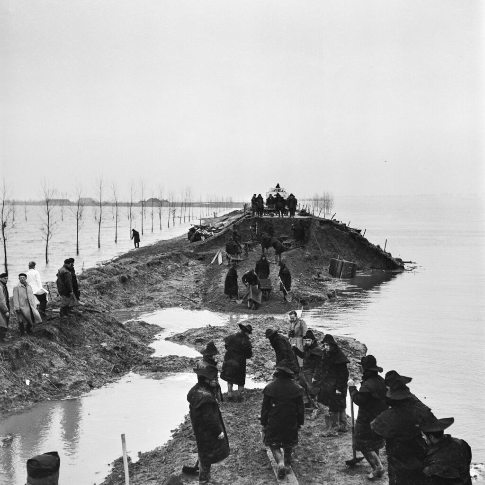
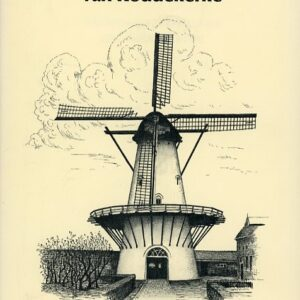
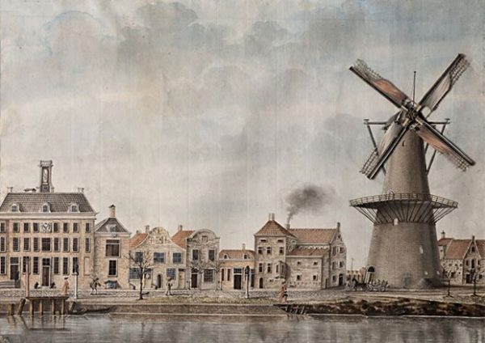

Een kwart van Nederland ligt lager dan de zee. Dat je hier droog zit, gaat niet vanzelf. Al eeuwen pompen molens en gemalen het water weg, en houden dijken de zee tegen. Typ je adres. Dan zie je wie jouw plek droog houdt, en wat er gebeurt als het misgaat.
Je huiskamer ligt 2,0 meter boven de zee.
Elke dag pompt gemaal Boreel het water uit jouw polder. Dat gemaal is van waterschap Scheldestromen.
Dit land werd rond 1200 droog gemaakt. In de tijdreis zie je hoe.
Een kwart van Nederland ligt lager dan de zee. bron
Hoe werd dit land droog? Lees van boven naar beneden.
Mensen bouwen een dijk om het land. De zee kan er niet meer bij. Dit stuk heet Polder Walcheren.
bronRegen blijft in de polder staan. Molens draaien op de wind en pompen het water over de dijk.
bronEr komt een gemaal, een pomp met een motor. Gemaal Boreel. Het doet het werk van veel molens tegelijk.
bronEen zware storm. Bij veel dorpen in Zeeland breekt de dijk. Hier in Middelburg blijft het droog.
bronGemaal Boreel draait nog steeds. Waterschap Scheldestromen let erop, dag en nacht.
bronEen gemaal is een gebouw met grote pompen. Het pompt water uit de polder naar de rivier of de zee. Vroeger deden molens dat, op de wind. Klik op een stip en zie wie hier nog meedoet.


